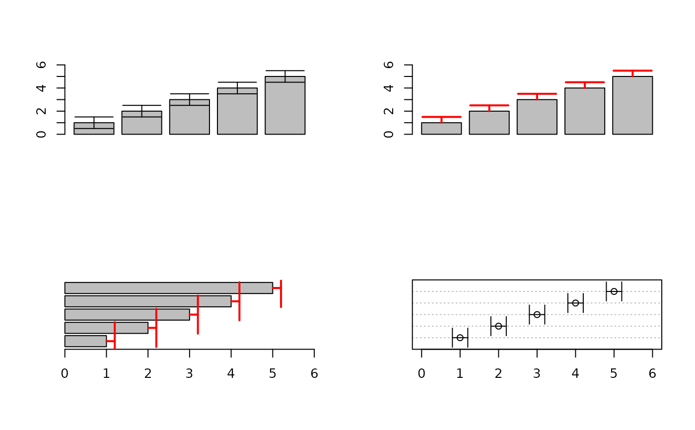

ErrBars.RdAdd error bars to an existing plot.
coordinates of points from which to draw (the lower end of the error bars). If to is left to NULL and from is a \(k \times 2 \) dimensional matrix, the first column will be interpreted as from and the second as to.
coordinates of points to which to draw (the upper end of the error bars).
numeric, position of the error bars. This will either be the x-coordinate in case of vertical error bars and the y-coordinate in case of horizontal error bars.
numeric, position of midpoints. Defaults to the mean of from and to.
logical, determining whether horizontal error bars are needed (default is FALSE).
the line color.
the line type.
line width.
integer code, determining where end lines are to be drawn. code = 0 will draw no end lines, code = 1 will draw an end line on the left (lower) side at (x0[i], y0[i]), code = 2 on the right (upper) side (x1[i], y1[i]) and
code = 3 (default) will draw end lines at both ends.
the length of the end lines.
plotting character for the midpoints. The position of the points is given by mid. If mid is left to NULL the points will be plotted in the middle of from and to. No points will be plotted if this is set to NA, which is the default.
the character extension for the plotting characters. Default is par("cex").
the color of the plotting characters. Default is par("fg").
the background color of the plotting characters (if pch is set to 21:25). Default is par("bg").
the dots are passed to the arrows function.
A short wrapper for plotting error bars by means of arrows.
par(mfrow=c(2,2))
b <- barplot(1:5, ylim=c(0,6))
ErrBars(from=1:5-rep(0.5,5), to=1:5+rep(0.5,5), pos=b, length=0.2)
# just on one side
b <- barplot(1:5, ylim=c(0,6))
ErrBars(from=1:5, to=1:5+rep(0.5,5), pos=b, length=0.2, col="red", code=2, lwd=2)
b <- barplot(1:5, xlim=c(0,6), horiz=TRUE)
ErrBars(from=1:5, to=1:5+rep(0.2,5), pos=b, horiz=TRUE, length=0.2, col="red", code=2, lwd=2)
par(xpd=FALSE)
dotchart(1:5, xlim=c(0,6))
ErrBars(from=1:5-rep(0.2,5), to=1:5+rep(0.2,5), horiz=TRUE, length=0.1)
